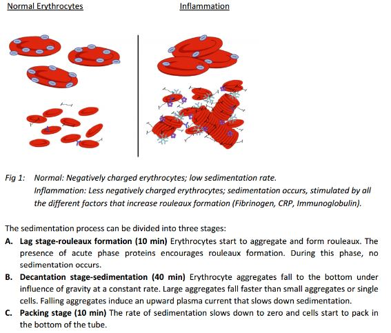
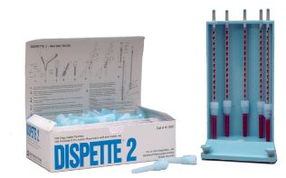
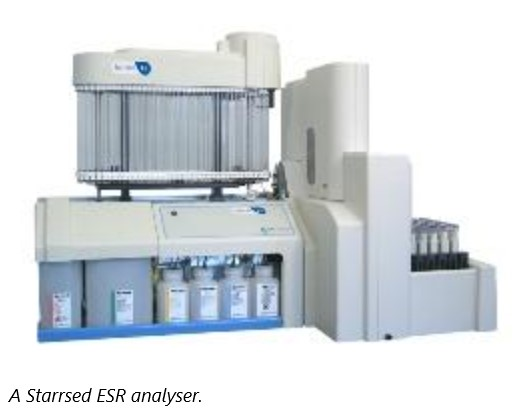

Erthyrocyte Sedementation Rate
The ESR was a test developed in 1921 for the study of pulmonary tuberculosis. It is a marker for inflammation in
the body by reflecting changes in plasma proteins.
It is a crude test due to many reasons including:
1. None specific as it cannot indicate the cause of inflammation.
2. Can show up whether chronic or acute.
3. ESR increases with age and pregnancy
4. It can be used as a simple monitoring tool for patients as part of a range of tests.
Principle
The International council for Standardization in Haematology (ICSH) has set out the Westegran method as a gold
standard
for ESR measurement. Erythrocyte sedimentation works by the principle of zeta potential whereby erythrocytes are
negatively
charged causing them to repel each other. Plasma proteins are a positively charged which counteracts the negativity
of the
erythrocytes causing them to aggregate and form rouleaux; this causes them to sediment at a faster rate.

Method
The Westergren method as referenced by the ICSH consists of the following steps:
Blood collection: Non-haemolysed blood is anti-coagulated with EDTA at collection.
It is recommended that the EDTA sample is tested within 4 hours after collection, but it has been reported that
storage for up to 24 hours at 4°C still results in a stable ESR value. When ready to test, the blood sample is
thoroughly mixed and diluted 4:1 using a sodium citrate solution.
Tube handling: The Westergren method uses standardized colourless, circular glass or plastic tubes, with an inner
diameter of at least 2.55 mm and sufficient length to include a 200 mm sedimentation scale. The inner diameter
should be constant (± 5%) over the whole length; a so called Westergren tube.
The diluted sample is aspirated and transferred to the Westergren tube. The Westergren tube is then placed in a
stable, vertical position at a constant temperature (± 1°C) between 18°C and 25°C in an area free from vibrations,
drafts and direct sunlight.
Reading the result: After 60 minutes., the distance from the bottom of the plasma meniscus to the top of the
descended erythrocytes is read and recorded in mm. The buffy coat that is made up of leukocytes should not be
included in the erythrocyte column.

There are 2 methods of measurement of ESR, manual and automated.
Manual
Manual kits such as Dispette 2, supply all the tube (usually plastic) and filling cap with anticoagulant
prefilled ( 0.5ml sodium citrate).
These are single use and must be thrown away once used.

Automated
The Starrsed ESR analyser is an automated ESR analyser which uses EDTA sample. This is easier as the patient does
not need bleeding unnecessarily,
because the same sample can be used for the full blood count. It uses the same principle in that 2ml of blood is
drawn up and left for 60mins.
The sedimentation rate is then read automatically by the analyser.

Factors affecting ESR include:
- PCV
- Verticality of the tube
- Width of tube
- Dilution of blood to anticoagulant. (Should be 1 part anticoagulant to 4 parts blood)
- Vibrations (Due to other equipment in the lab ie/centrifuge)
- Sunlight
- Draughs
- Temperature